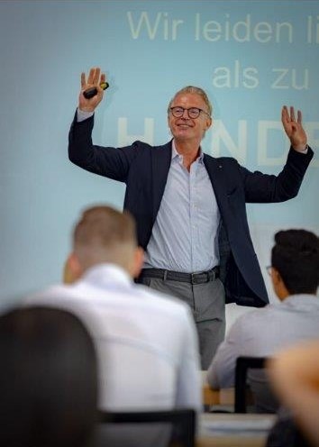

Vorträge & Keynotes
Impulse, die bewegen.
Wer in die Bundesliga will, muss nur ein paar wenige Dinge anders machen.
Worum es geht
Über 100 Vorträge. Eine Botschaft.
Aigner Offensiv bietet Ihnen zu einer Reihe von aktuellen Themen interessante Vorträge – explizit zu Entrepreneurship, Führungsexpertise und Vertriebsklasse.
Jedes Mal geht es um eigene Überzeugung, erfolgreiche Systeme und individuelles Persönlichkeitsverhalten, die zum Ziel führen. Rainer Aigner hat mittlerweile über 100 motivierende Vorträge bei Unternehmen, Verbänden und Vereinen gehalten.
Es wird nichts grundsätzlich anders – aber einiges grundsätzlich erfolgreicher.

Keynote · Impulsvortrag · Dinner-SpeechDie Themen
Aktuelle Vorträge
Lust auf Erfolg
Offensives Verhalten als Strategie zur Führungskraft, zum Topverdiener und Manager – der Klassiker nach dem gleichnamigen Buch.
Einmal FC Bayern – Anspruch, Wahnsinn oder Realität?
Was Spitzenleistung im Sport über große Ziele im Beruf lehrt – und welche Abkürzungen wirklich nach oben führen.
Vertrieb – Straight Leadership
Zählbares schaffen macht den Unterschied: Vertriebsgeschwindigkeit erzeugen mit klaren Systemen und offensivem Verhalten.
Führungskraft – ja, bitte!
Motivierende und nachhaltige Führungsstrategien – warum Führung Lust statt Last sein sollte.
Pilot oder Passagier
Der Impulsvortrag über Eigenverantwortung: Wer steuert eigentlich Ihr Leben – Sie oder die Umstände?
Teilnehmerstimmen
Das sagen Veranstalter
Ein guter Mann, um die Gedanken wieder in Bewegung zu bringen. Durch seinen motivierenden Vortrag wurde mir bewusst, dass Erfolg nur durch ständiges aktives und offensives Handeln möglich ist!
Selten so einen unterhaltsamen Motivationsabend erlebt. Rainer Aigner rüttelt alle auf, die sich in der lauwarmen Komfortzone eingerichtet haben. Die Message ist klar: runter vom Sofa – die nächste Challenge wartet schon!
Pure Begeisterung in den Augen unserer Gäste – erzeugt durch Rainer Aigners Impulsvortrag „Pilot oder Passagier“. Das Dinner unseres diesjährigen Management-Forums wurde so zum Highlight der Veranstaltung.
In welcher Situation sind Sie?